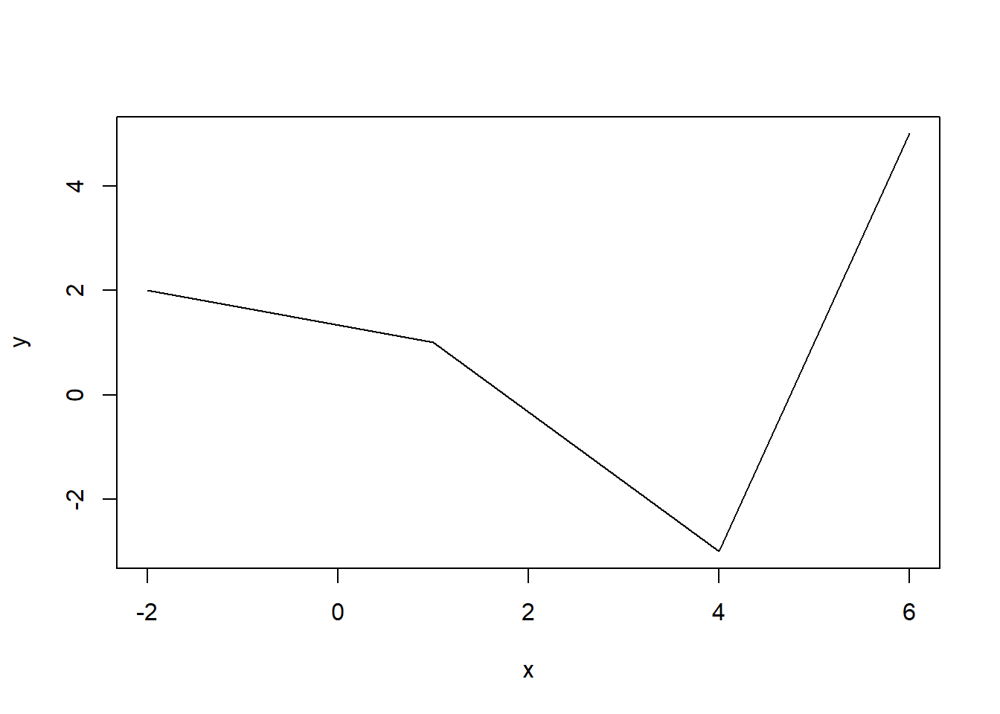
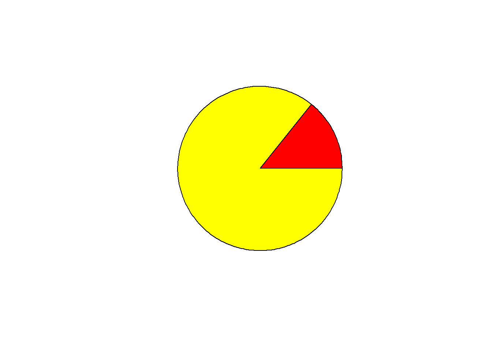
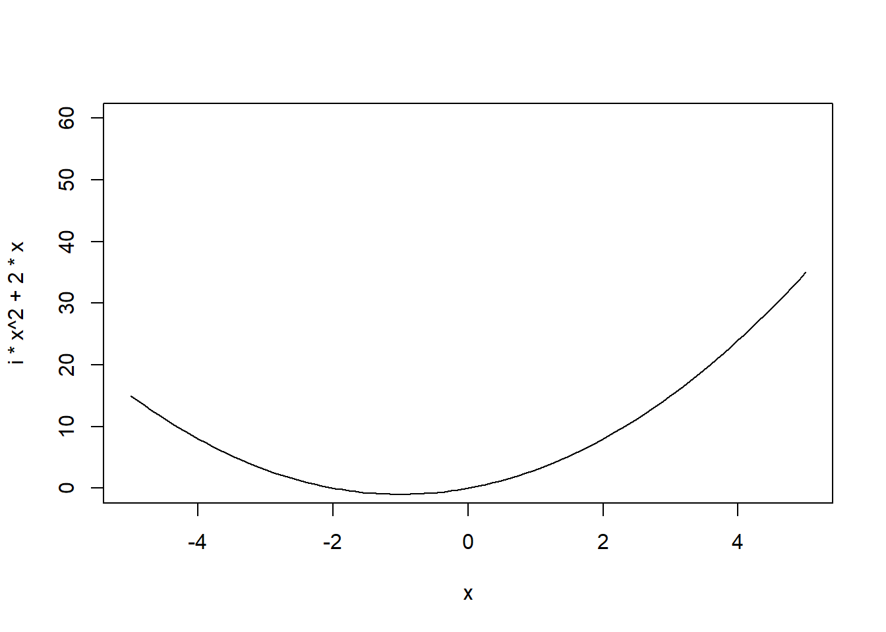

4 Introduction to R Markdown
4.1 R Markdown recources
R Markdown
A comprehensive refernce menu by the authors of R Markdown can be found in https://bookdown.org/yihui/rmarkdown-cookbook/.
R Markdown cheatsheet https://rstudio.com/wp-content/uploads/2015/02/rmarkdown-cheatsheet.pdf
Latex
A comprehensive Latex cheat sheet http://tug.ctan.org/info/latex-refsheet/LaTeX_RefSheet.pdf
A simple Latex cheat sheet http://tug.ctan.org/info/undergradmath/undergradmath.pdf.
You may try the formulas in this online edutor first http://visualmatheditor.equatheque.net/VisualMathEditor.html before you copy them to R Markdown.
4.2 A simple R Markdown file
R Markdown allows you to create documents that serve as a neat record of your analysis.
To get RMarkdown working in RStudio, the first thing you need is the rmarkdown package.
To create a new RMarkdown file .Rmd, select File -> New File -> R Markdown in RStudio, then choose the file type you want to create. For now we will focus on a .html document, which can be easily converted to other file types later.
The newly created .Rmd file comes with basic instructions.
Write an R code chunk, always start and end the code chunk in the following format.
To display a plot:

To create sections, start with #, follow by a space then your section title. To see the content with sections titles, you need to add number_sections: yes to the header
Then click knit to HTML under the Rmd file tab.
4.3 Getting started with equations
Subscripts and Superscripts:
\[X_i\] \[X^i\]
Multiple subscripts and Superscripts:
\[X_{i,j,k}\] \[X^{i,j,k}\] \[X^{2k}_{i,j}\]
Square Roots:
\[\sqrt{b^2 - 4ac}\]
We can write fractions:
\[\frac{2}{3}\] Summation:
\[\sum_{i=1}^{n} X^3_i\]
Integration and trig functions:
\[\int_0^{2\pi} \sin x~dx\] Self-Sizing Parentheses:
\[\sum_{i=1}^{n}\left( \frac{X_i}{Y_i} \right)\]
And,
\[\hat{\lambda}=1.02\]
\[\alpha, \beta, \gamma, \Gamma\]
\[a \pm b\]
\[x \ge 15\]
\[a_i \ge 0~~~\forall i\]
4.4 Matrix and equations
$$A_{m,n} =
\begin{pmatrix}
a_{1,1} & a_{1,2} & \cdots & a_{1,n} \\
a_{2,1} & a_{2,2} & \cdots & a_{2,n} \\
\vdots & \vdots & \ddots & \vdots \\
a_{m,1} & a_{m,2} & \cdots & a_{m,n}
\end{pmatrix}$$\[A_{m,n} = \begin{pmatrix} a_{1,1} & a_{1,2} & \cdots & a_{1,n} \\ a_{2,1} & a_{2,2} & \cdots & a_{2,n} \\ \vdots & \vdots & \ddots & \vdots \\ a_{m,1} & a_{m,2} & \cdots & a_{m,n} \end{pmatrix}\]
Aligning Equations: For example, suppose you are proving that the sum of deviation scores is always equal to zero in any list of numbers. You can align the equations like this. Notice how I define new symbols and to make things much simpler! Notice the key role that the alignment tab character & plays in telling LaTeX where to align the equations. Also notice the double-backslash newline character at the end of every line of the equation except the last \[ %% Comment -- define some macros \def\Xbar{\overline{X}_\bullet} \def\sumn{\sum_{i=1}^{n}} %%%%%%%%%%%%%%%%%%%%%%%%%%%%%%% \begin{align} \sumn \left(X_i - \Xbar\right) &= \sumn X_i - \sumn \Xbar \\ &= \sumn X_i - n \Xbar \\ &= \sumn X_i - \sumn X_i \\ &= 0 \end{align} \]
$
\begin{align}
3+x &=4 && \text{(Solve for} x \text{.)}\\
x &=4-3 && \text{(Subtract 3 from both sides.)}\\
x &=1 && \text{(Yielding the solution.)}
\end{align}
$\[ \begin{align} 3+x &=4 && \text{(Solve for} x \text{.)}\\ x &=4-3 && \text{(Subtract 3 from both sides.)}\\ x &=1 && \text{(Yielding the solution.)} \end{align} \]
4.5 Statistics
The binomial probability:
$f(y|N,p) = \frac{N!}{y!(N-y)!}\cdot p^y \cdot (1-p)^{N-y} = {{N}\choose{y}} \cdot p^y \cdot (1-p)^{N-y}$\[f(y|N,p) = \frac{N!}{y!(N-y)!}\cdot p^y \cdot (1-p)^{N-y} = {{N}\choose{y}} \cdot p^y \cdot (1-p)^{N-y}\]
To calculate the mean of observations of variable , you can use:
\[\bar{x} = \frac{1}{n} \sum_{i=1}^{n}x_{i}\]
Let’s do the same with the equation for variance
\[\sigma^{2} = \frac{\sum_{i=1}^{n} \left(x_{i} - \bar{x}\right)^{2}} {n-1}\]
Next, it’s good to look at the equation for covariance to see how it is just a generalization of variance to two variables.
\[cov_{x,y} = \frac{\sum\limits_{i=1}^{n}{(x_i-\overline{x}) \cdot (y_i-\overline{y})} }{n-1}\]
The standard deviation.
4.6 Tables
First creat a table in dataframe format.
Print the contents of a data frame:
## A B C
## 1 a 5 23
## 2 a 3 21
## 3 b 15 20
## 4 b 6 32Display the table by kable() in the knitr package. The first argument tells kable to make a table out of the object dataframe and that numbers should have two significant figures. You need to load the knitr package first.
| A | B | C |
|---|---|---|
| a | 5 | 23 |
| a | 3 | 21 |
| b | 15 | 20 |
| b | 6 | 32 |
Or you can use pander() in the pander package. Let the 3rd column to appear in italics:
library(pander)
emphasize.italics.cols(3) # Make the 3rd column italics
pander(df) # Create the table| A | B | C |
|---|---|---|
| a | 5 | 23 |
| a | 3 | 21 |
| b | 15 | 20 |
| b | 6 | 32 |
4.7 Create GIFs
gifski is an R package that generate gif figures, you need to install it first, and you need to load it before you use it,
library(gifski)#.
for (i in 1:2) {
pie(c(i %% 2, 6), col = c('red', 'yellow'), labels = NA) # ‘x %% y’ indicates ‘x mod y’
}

4.8 Support Python and Shell script
You need to first install Python in your machine. Running a piece of Python code may slows down the Knitting process.
## Hello Python!## /usr/local/bin:/usr/bin:/bin:/opt/bin:/c/Windows/System32:/c/Windows:/c/Windows/System32/Wbem:/c/Windows/System32/WindowsPowerShell/v1.0/:/usr/bin/site_perl:/usr/bin/vendor_perl:/usr/bin/core_perl4.9 Homework 1 - part 4
Put all your homework 1, 2, 3 in one markdown file. There should be 3 sections and each section is titled by ‘Homework i’, i = 1,2,3. Generate a content quick link at the begining. Submit the Rmd file and the generated pdf file.